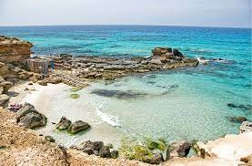

"Formentera es sinónimo de playas, sol y hospitalidad. Aunque durante la temporada alta, esta pequeña isla recibe olas de turistas, el destino no es menos cautivador fuera de temporada."
"De hecho, podrá disfrutar más tranquilamente de sus increíbles áreas naturales."
"También encontrará encantadores pueblos rodeados de olivos y almendros."
"Esta pequeña isla balear situada en el este de España, es uno de los destinos turísticos más codiciados de todo el Mediterráneo."
"A pesar de que e suna muy visitada, la isla conserva un patrimonio histórico y natural excepcional."
"Capital de la fiesta para algunos, paraíso de tranquilidad para otros, Ibiza combina a la perfección íntimas calas y olivares en el norte, con discotecas y animados puertos en el sur."